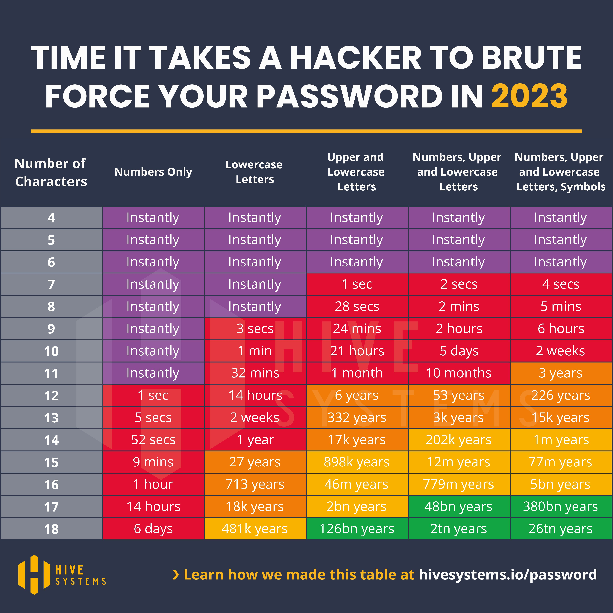
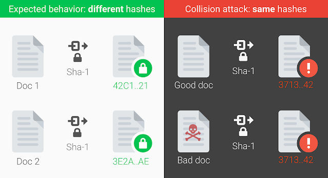
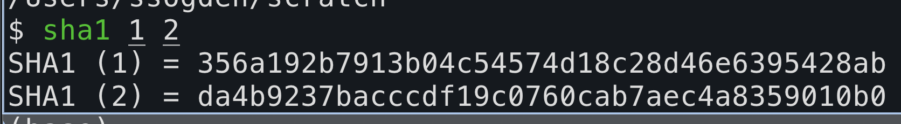
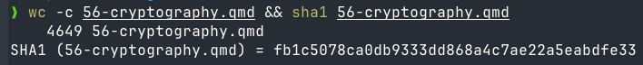
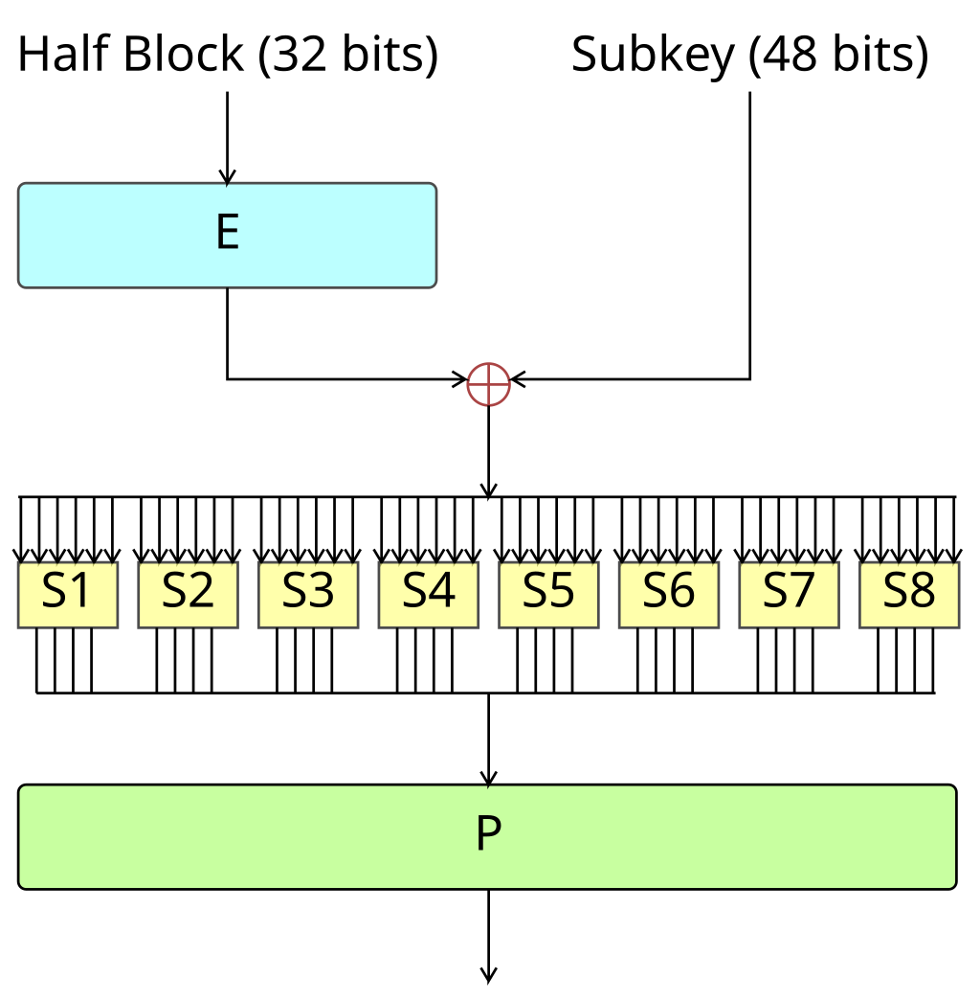

Cryptography
CSUMB
Sam Ogden
DRAFT
This slide deck is still under active development. Expect changes before it is finalized.
Lecture Objectives
- After this lecture, you should be able to:
- Talk about the two main kinds of cryptography
- Discuss how we use cryptography in operating systems and computer science
- Know to never, ever roll your own (at least until you do much too much math)
Major Goals of Cryptography
Confidentiality
- Hide the information from prying eyes
- Encryption
Authenticity
- Ensure the data came from who it says it came from
- Signing
Integrity
- Ensure the data is correct
- Checksums
Confidentiality
Ensuring data is secret
Two main kinds of Encryption
- Symmetric Key encryption
- Both the sender and receiver use the same key
- Examples: DES, AES, Blowfish
- Asymmetric key encryption
- The sender and the receiver use two different keys, the public key and a private key
- Examples: RSA, ECC
Shared-Key Encryption (Symmetric)
We are given:
- An algorithm (aka
cipher), \(E\) - Some data (aka
plaintext), \(P\) - One secret (aka
key), \(K\)
We output:
- Encrypted data (aka
ciphertext), \(C\)
\(C = E(P,K)\)
\(P = D(C,K)\)
Public-Key Encryption (Asymmetric)
We are given:
- An algorithm (aka
cipher), \(E\) - Some data (aka
plaintext), \(P\) - Two keys
- A public \(K_{public}\)
- A secret \(K_{private}\)
- The scheme is public; the keys are what matter
\(C = E(P,K_{public})\)
\(P = D(C,K_{private})\)
Trade-offs
- Public Key encryption is expensive
- Long keys (thousands of bits)
- Lots of calculations (huge exponents)
- Shared Key encryption is onerous
- Either you have many unique keys, or you reduce privacy greatly
- Often we use a mix of both!
Diffie-Hellman Key Exchange

Encryption Summary
- Encryption protects confidentiality
- The algorithm is public; security comes from the key, not from hiding the method
- Symmetric encryption uses one shared secret key
- Asymmetric encryption uses a public key to encrypt and a private key to decrypt
- Good systems use encryption as part of a larger design, not as a magic shield
Integrity
Verifying data is right
Integrity: Core Idea
- Include a piece of information to ensure that a file is unaltered
- We accomplish this by adding in an extra piece of information: a
hash - Hashes are one-way functions that represent data in a compact form
Features of Cryptographic Hashes
- Collision Resistance: Collisions are computationally infeasible
- Input sensitivity: Any input change results in large output change
- Roughly 50% of bits in output should change for any single input bit change
- One-way: Computationally infeasible to infer input properties
Computationally Infeasible

Hashes: Collisions

Hashes: SHA-1 Collision
- Google made a SHA-1 collision happen in 2017
- It was previously considered secure
- Some numbers:
- Nine quintillion (9,223,372,036,854,775,808) SHA1 computations in total
- 6,500 years of CPU computation to complete the attack first phase
- 110 years of GPU computation to complete the second phase
Hashes: Small Changes to Big Changes

We change one bit in the input and it changes everything in the output
Hashes: One-way

A hash compresses a large input into a fixed-size digest
It should be infeasible to recover the input from that digest
Authentication
Verifying we are us
Authentication: two common models
- Shared-secret authentication uses one key on both sides
- Example: HMAC
- Public-key authentication uses a private key to sign and a public key to verify
- Example: digital signatures
- Both prove authenticity, but they trust different things
Core Idea: Authentication
Our goal is to prove that we are us, and that we did a thing
- We can do this by sharing something only we would know
- We can sign the file with our private key, which is known only to us
- Recipient can then verify with our public key
- Remember that our public and private keys are two sides of the same algorithm
Example of Authentication: Digital Signatures
Digital signatures are the public-key version of authentication.
- The sender signs a hash of the message with a private key
- The receiver hashes the message again and verifies the signature with the public key
- If the verification passes, the message is authentic and unchanged
Breaking Crytography
Common Ways to crack Cryptography
Computational threats
- Brute-forcing keys
- Side-channel attacks
- Quantum Computers
Operational Issues
- Social Engineering
- Backdoors
Design Flaws
- Software errors
- Bad cryptosystem design
Example of a flawed system: DES

Cryptography in Operating Systems
What the OS should think about
- How to provide entropy
- How to protect the user against us
- How to provide at-rest data encryption
- How to safely authenticate users across systems